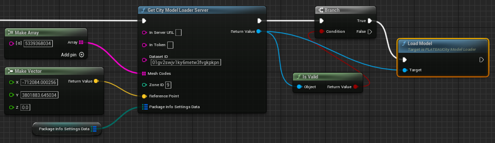
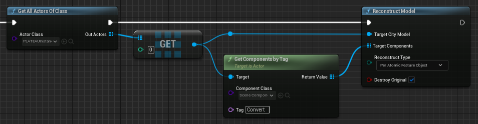

エディタAPI
このページではブループリントで、エディタAPIを使用する方法を記載します。
インポート
PLATEAU SDKウィンドウのインポートの機能をAPIにてご利用いただけます。
準備
インポートを行うためにPLATEAUCityModelPackageをKeyとして、PackageInfoSettingsをValueとしたMapデータを作成します。
特定の地物のみ読み込む場合のインポートデータ設定
インポートするPLATEAUCityModelPackageとPackageInfoSettingsをMapデータに格納します。
- PackageInfoSettingsの各項目はの設定は、PLATEAU SDKウィンドウの
インポートに対応しています。
全ての地物を読み込む場合のインポートデータ設定
PLATEAU|BPLibraries|Util|GetAllCityModelPackagesにて全てのパッケージを取得し、Mapデータに格納します。
- PackageInfoSettingsの各項目はの設定は、PLATEAU SDKウィンドウの
インポートに対応しています。

ローカルからのインポート

- PLATEAU|BPLibraries|ImportAPI|Get City Model Loader Localを配置します。
- 参照するローカルのCityGMLまでのパスをSource Pathにセットします。
- 読み込みたい地域のメッシュコードのArrayをMesh Codesにセットします。
- 基準座標系の番号をZone IDにセットします。
- オフセット値のx,y,zの値をVectorとしてReference Pointにセットします。
- 上記で作成したPLATEAUCityModelPackageをKeyとして、PackageInfoSettingsをValueとしたMapデータをPackage Info Settings Dataにセットします。
- Return ValueでPLATEAUCityModelLoaderを取得できます。
サーバーからのインポート

- PLATEAU|BPLibraries|ImportAPI|Get City Model Loader Serverを配置します。
- 接続先を上書きする場合は、In Server URL, In Tokenの値をセットします。上書きしない場合は空欄にします。
- Dataset IDをセットします。
- （取得方法は、以下のNOTEを参照してください。）
- 読み込みたい地域のメッシュコードのArrayをMesh Codesにセットします。
- 基準座標系の番号をZoneIDにセットします。
- オフセット値のx,y,zの値をVectorとしてReference Pointにセットします。
- 上記で作成したPLATEAUCityModelPackageをKeyとして、PackageInfoSettingsをValueとしたMapデータをPackage Info Settings Dataにセットします。
- Return ValueでPLATEAUCityModelLoaderを取得できます。
Note
Dataset IDの取得
PLATEAU SDKにてサーバからインポートを行いシーン上のPLATEAUCityModelLoaderを選択します。詳細パネルのSource項目がDataset IDに該当します。
ローカル・サーバー共通
- Is Validを使用して、上記で取得したPLATEAUCityModelLoaderが利用可能かどうか確認します。
- PLATEAUCityModelLoaderをTargetとしてPLATEAU|Load Modelを配置します。
Note
Validでない場合、内部エラーが発生していますので、設定項目に間違いがないかご確認ください。
ロード完了通知

PLATEAUCityModelLoaderにImport Finished Delegate Eventをバインドすることで、ロード完了通知を受け取る事ができます。
ロードキャンセル

PLATEAUCityModelLoaderをTargetとしてPLATEAU|Cancelを配置することでロードをキャンセルする事ができます。
エクスポート
PLATEAU SDKウィンドウのエクスポートの機能をAPIにてご利用いただけます。
- エクスポートするModelを含むPLATEAUInstancedCityModelを取得します。
- PLATEAU|BPLibraries|ExportAPI|Export Modelを配置し、Target City Modelに取得したPLATEAUInstancedCityModelをセットします。
- PLATEAUMeshExportOptionsを配置し、各項目を設定し、Optionsにセットします。
- 設定内容は、PLATEAU SDKウィンドウの
エクスポートに対応しています。
- 設定内容は、PLATEAU SDKウィンドウの
- 出力するフォルダーパスを Export Pathに設定します。
ゲームオブジェクトON/OFF
PLATEAU SDKウィンドウのゲームオブジェクトON/OFFの機能をAPIにてご利用いただけます。
- フィルタするModelを含むPLATEAUInstancedCityModelを取得します。
- PLATEAU|BPLibraries|ModelAdjustmentAPI|Filter Modelを配置し、Target City Modelに取得したPLATEAUInstancedCityModelをセットします。
- 表示するパッケージ(EPLATEAUCityModelPackage)のArrayをEnablePackagesにセットします。
- 表示する各パッケージ(EPLATEAUCityModelPackage)ごとのLOD(PLATEAUPackageLod)をパッケージをKey,LODをValueとしたMapにしてPackageToLodRangeMapにセットします。
- 重複する地物を非表示にする場合は、OnlyMaxLodをTrueに設定します。
- 表示するタイプ(EPLATEAUCityObjectsType)のArrayをEnableCityObjectsにセットします。
結合・分離
PLATEAU SDKウィンドウの結合・分離の機能をAPIにてご利用いただけます。

- 結合・分離するModelを含むPLATEAUInstancedCityModelを取得します。
- PLATEAU|BPLibraries|ReconstructAPI|Reconstruct Modelを配置し、Target City Modelに取得したPLATEAUInstancedCityModelをセットします。
- 取得したPLATEAUInstancedCityModel内の結合・分離する各SceneComponentのArrayをTargetComponentsにセットします。
- 結合・分離単位(EPLATEAUMeshGranularity)をReconstructTypeにセットします。
- 地域単位:PerCityModelArea, 主要地物単位:PerPrimaryFeatureObject, 最小地物単位:PerAtomicFeatureObject
- 変換元を削除する場合は、DestroyOriginalをTrueに設定します。
Note
上の例では、Convertタグをつけたコンポーネントのみを変換しています。